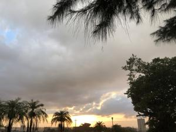
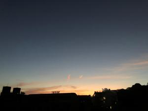
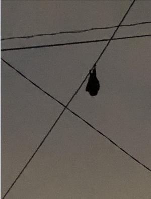

うるがいの話 ある日
最新: 日は暮れて【うるがいの話 ある日】とは 一日だけのプログです
『うるがいの話』の最新一日だけのプログで、通信料が少なく経済的だ。カニの画像をクリックすると全ての日付が載る『うるがいの話』サイトを表示します
|
|
【うるがいの話】 うるがい(ｳﾙｶﾞｲ urugai)とは、『もずくがに』の名前でとても大きくなります。 |
|---|---|
|
|
【カミマヤーの話】 猫のことを方言でマヤーといいます。カミマヤー（kamimayaa）とは、神の猫のことです。 |
|
【たながぁの音楽】 たながぁ（ﾀﾅｶﾞｰ tanagaa）とは手長えびのことで、何種類かあり大きいのは車 エビぐらいになります。 |

|
【ぶながぁの話】 ぶながぁ(ﾌﾞﾅｶﾞｰ bunagaa)とは、赤い髪の毛、赤い身体、そして身長は１ｍ２０ｃｍ ぐらい、川の蟹を食べているの目撃された。場所は沖縄県国頭郡大宜味村のと ある村僕の隣近所に住んでいる爺さんから、聞いた話です。 |
|
|
【ギーマの話】 ギーマ(giima)とは、山原の里山に咲くスズランに似た、 花を付けます。実は食べられます、 気が付くと口の周りが紫になっています。 |
2022年10月07日 (金）日は暮れて
17:31
  
いつものように、夕方６時前にジョギングすると、戻るまでにはすっかり日が
くれ昨日のような天気だと、スウジガーも足元が見えなくなっている。家に近
づき電柱の線をみるとオオコウモリが、とまっていた。ほー、大胆なとスマホ
で写真を撮る。ヨメのお母さんは、マンションに一人で眠ると気が狂いそうだ
というので、ヨメはイヤイヤ泊まる羽目になっている。それ以外に食事などの
面倒をみるとため、日に数回、家とマンションを往復する。私は送り迎えを手
伝うが、ヨメのストレスは大変なものだ。
スマホには、毎朝迷惑ＳＭＳメールが届いている。通知音がやがましい、停止
しようかと考えたが、とりあえずあまり気にならないメロディーに設定する。
あー、あー、なんでリンクを押したのだろう。ただ、子供達とはＬＩＮＥでや
り取りをするようになっているので、影響は軽減されている。
１６時３６分 ビットコインの総資産 ￥８、３７６↓